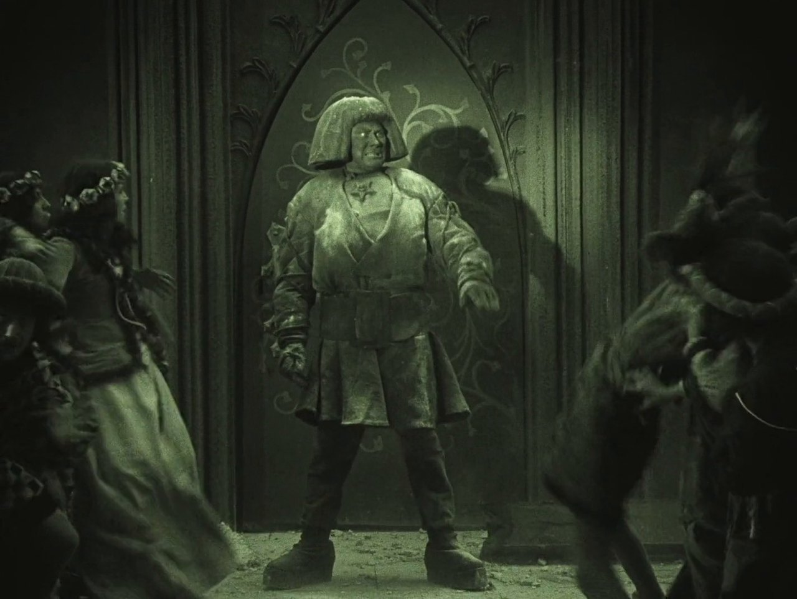

The Golem: How He Came into the World, frame at 49:51
Paul Wegener and Carl Boese · 1920 · Silent film, tinted in this copy (frame)
Free to use
Paul Wegener, who co-directed and co-wrote the film, plays the Golem himself. It was his third film about the creature and the only one of the three not lost. The sets, a stylised version of the medieval Jewish ghetto of Prague, were designed by the architect Hans Poelzig and built at the Tempelhof Studios in Berlin. In New York in 1921 the film ran for 16 weeks straight at the Criterion Theater.